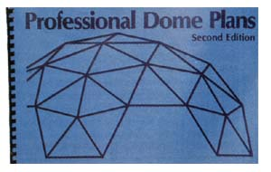
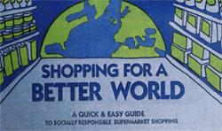

A field guide to shelter alternatives and sensible shopping.
A NUMBER OF GOOD-AND VARIED books on housing have recently sprung up in our neighborhood.
As John Bower reported in "PollutionFree Housing" (MOTHER 116), a wide range of substances commonly used in building materials, furniture, and other household products can have toxic effects on chemically sensitive people. Bower has now written by far the most comprehensive book available on nontoxic building: The Healthy House: How to Buy One, How to Build One, How to Cure a "Sick" One (hardbound for $17.95 plus $2 shipping and handling from Lyle Stuart, Inc., 120 Enterprise Ave., Secaucus, NJ 07094). I could tell you that John covers everything from testing sensitivity to framing walls, or I could mention that there are more than 200 sources of nontoxic materials in one of the three appendixes. But it's simpler to put it this way: If you even suspect that you or your loved ones may have chemical sensitivities, don't buy, build, or remodel a house without first arming yourself with this book.-DRS
"Alternative housebuilding won't stump you with high-tech engineering trickery. Alternative materials make sense. They will be familiar and comfortable from the start, even though you may need some time to use them with great skill." With these words, Mike McClintock begins leading his readers through the concepts and skills of making their own log, timber-frame, pole, cordwood, stone, rammed-earth, or earthsheltered house. McClintock's seven-part, 367-page guide, Alternative Housebuilding ($16.95 plus $2 shipping and handling from Sterling Publishing Co., Inc., 387 Park Ave. S., New York, NY 10016), can help anyone who is interested in unconventional, hands-on construction choose which technique to use and gain the skills to do so.
On a much more modest scale comes Stephen Taylor's A Place of Your Own Making: How to Build a One-Room Cabin, Studio, Shack, or Shed ($14.95 postpaid from Henry Holt Distribution Center, 4375 W. 1980 South, Salt Lake City, UT 84104). Taylor's construction counsel for those hoping to build a complete (sans plumbing), little freestanding building is friendly, useful, and elementary, yet still thorough. Actually, though, his entertaining text touts the self-knowledge and hands-on experience gained by building as much as it does the end result.
Christopher Evers's The Old-House Doctor (hardbound for $17.95 plus $2.65 shipping and handling from The Overlook Press, R.R. 1, Box 496, Lewis Hollow Rd., Woodstock, NY 12498; specify ISBN No. H.C. 087-951-090-0 when you order) tackles the more difficult job of repairing or restoring any type of old, period house. Evers's 21 years of experience as a professional old-house rehabilitator shows throughout his helpful guide. It's flecked with valuable tips on such topics as scabbing, sistering, or scarfing rotten framing supports and replacing single wood roof shingles without leaving an exposed nail. There are also helpful resource lists.
Jeffrey Hill's large (11" X 17") Professional Dome Plans ($34.95 postpaid from Precision Structures, 2565 Potter St., Dept. 125, Eugene, OR 97405) is a book for builders, not dreamers. If you're planning to construct your own dome, the detailed shop drawings and terse suggestions will be well worth the asking price. As Hill dryly remarks, when describing his penchant for rounding dimensions to the nearest thirty second of an inch, "This level of accuracy may seem extreme, but it's my experience that people are capable of making all the necessary mistakes without help from sloppy dimensions."
What happens when you produce a ton of new paper from old paper instead of from wood pulp? You save 17 trees, use half the energy and water, create 74010 less air pollution and 35070 less water pollution, reduce solid waste, and increase jobs. Why then don't more people use recycled paper? Lack of availability.
That excuse won't work anymore. The Earth Care Paper Company offers-by mail order-clever greeting and holiday cards, lovely stationery, attractive postcards and envelopes, a recycled-paper-selling fundraising kit for schools (no more candy bar drives!), computer paper, copy paper, office mailers, and more in a variety of tints and textures-and all from recycled paper. Earth Care even offers "the most ecological paper made," a no-acid, offwhite sheet that's neither de-inked or bleached. The 24-page catalog ($1 from Earth Care Paper Co., P.O. . Box 3335, Madison, WI 53704) includes 11 product samples so you can see-and feelthe high quality of the products for yourself.
Two years ago, the Council on Economic Priorities released Rating America's Corporate Conscience, a notable work assessing the social and environmental policies of our major corporations. Last year, to make their information more usable, the council came out with the 128-page pocket-size guide, Shopping for a Better World: A Quick & Easy Guide to Socially Responsible Supermarket Shopping ($5.95 postpaid from CEP, 30 Irving Pl., New York, NY 10003; 800[U-CAN-HELP). This little gem assesses 1,300 brand-name products, from A-1 Steak Sauce to Ziploc storage bags, in categories such as advancement of women, investment in South Africa, animal testing, military contracts, and environment. If you o want to know the implications of your mar W ket dollars, Shopping is the guide to buy.-PS
|
 KEN FORSGREN Above: The dome home can be easy on the owner-builder and is surprisingly energy efficient. |
 Below: Your supermarket cart can be a tool for positive change if you wield it wisely. |
|